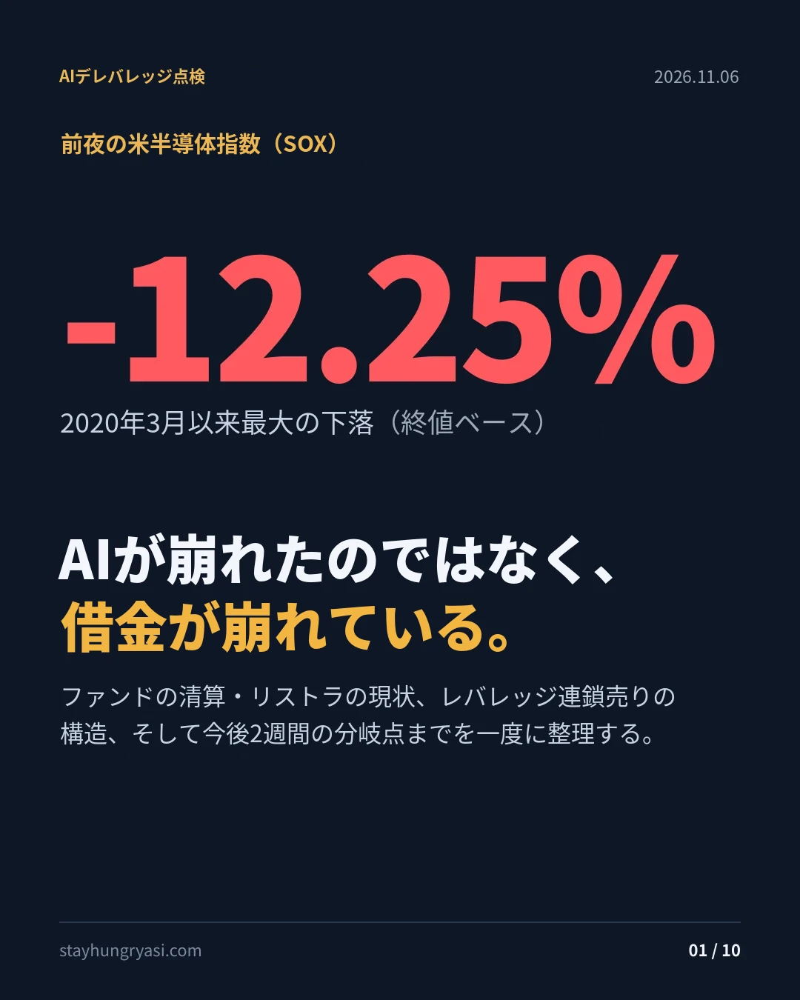
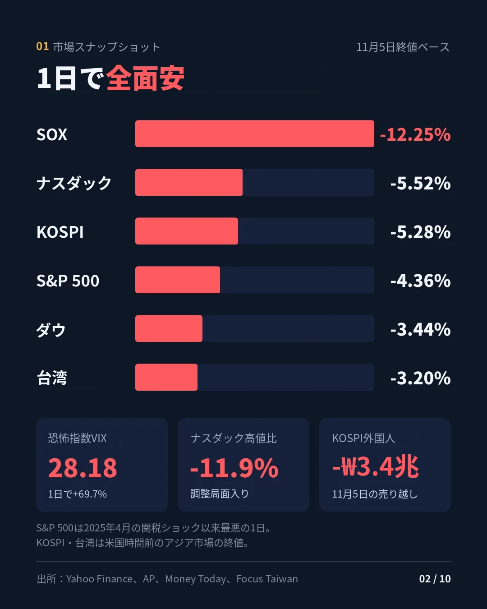
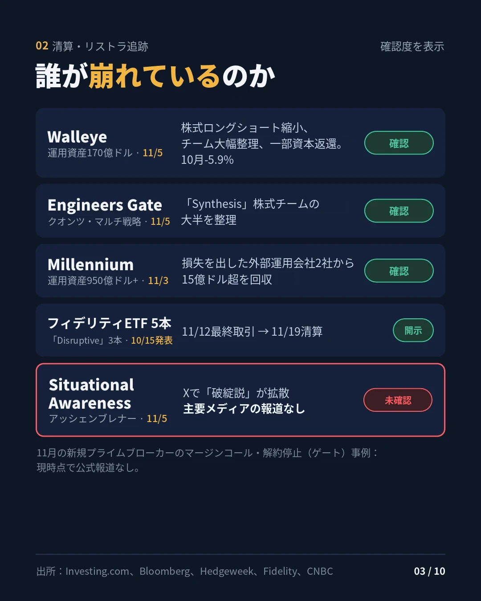
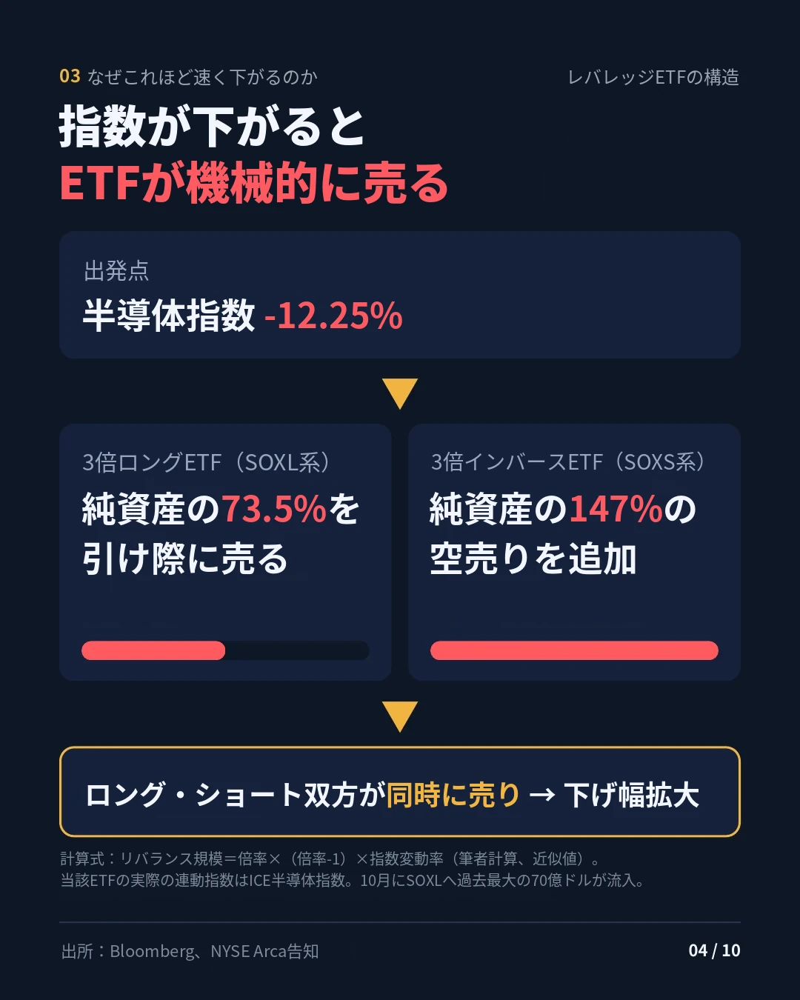
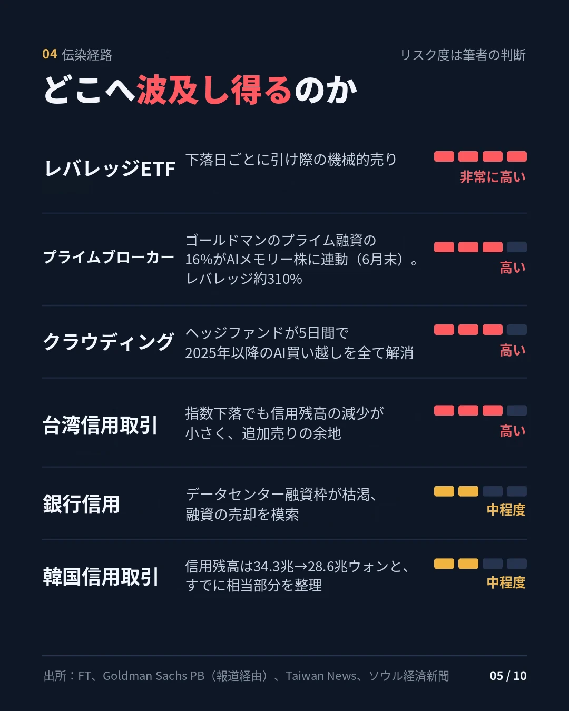
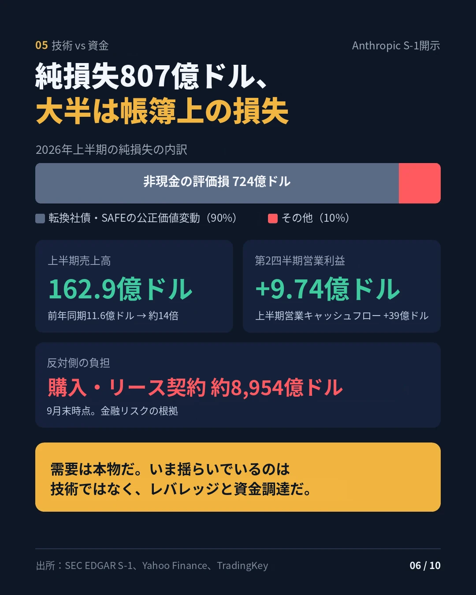
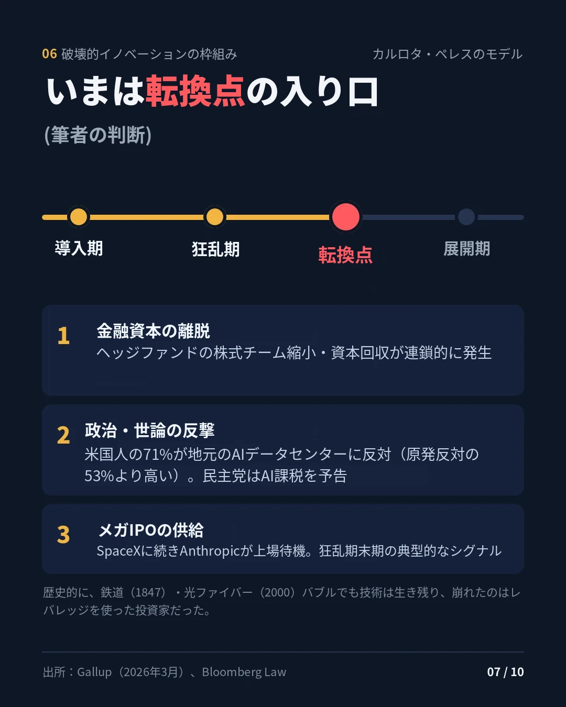
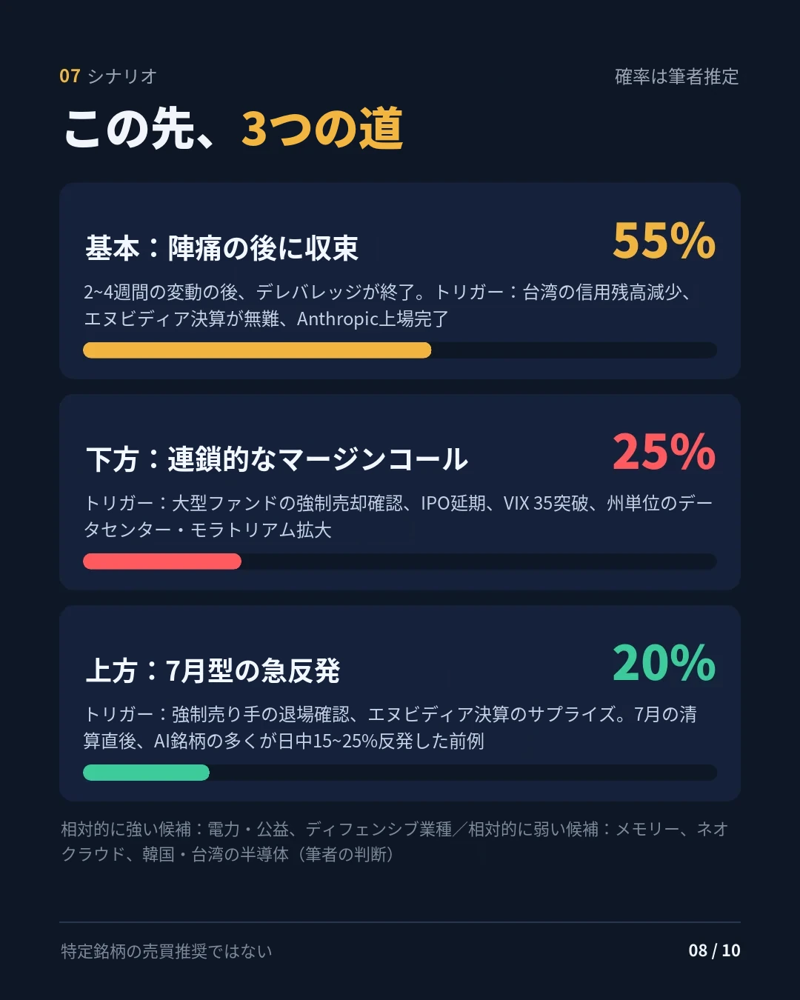
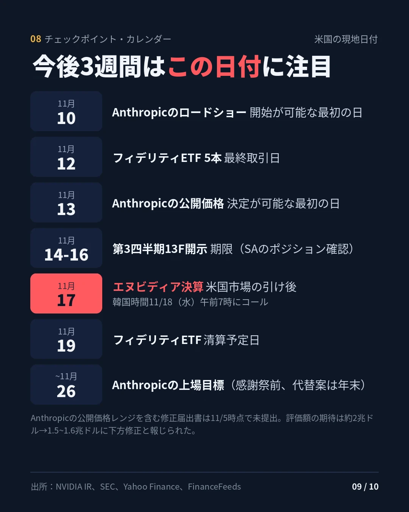

データ基準：2026年11月5日米国通常取引終値 · 作成：2026年11月6日07時（韓国時間） · stayhungryasi.com
表記ルール：数値はリンクした出典に基づく事実である。「推定」は筆者の判断、「未確認」は一次報道で確認できなかった事項である。草稿作成後に約40項目を出典と再照合し、訂正内容は最後のセクションにまとめた。
利益相反の告知：本リサーチはAnthropicのAI（Claude）を使って作成しており、本文にはAnthropicのS-1とIPO日程が登場する。投資勧誘ではない。
要点だけを10枚にまとめた。画像をクリックすると拡大表示できる。









| 指標 | 終値 | 騰落 | 備考 |
|---|---|---|---|
| S&P 500 | 7,353.73 | -4.36% | 2025年4月の「解放の日」関税ショック以来最悪の1日 |
| ナスダック総合 | 24,315.00 | -5.52% | 高値から-11.9%で調整局面入り。一部メディアは-5.2%と集計 |
| ダウ | 51,523.06 | -3.44% | -1,833ポイント |
| フィラデルフィア半導体（SOX） | — | -12.25% | 6/5の-10.3%を上回り、2020年3月以来最大の下落幅（推定、終値比較） |
| VIX | 28.18 | +69.66% | |
| 米10年債 | 4.837% | -5.7bp | |
| WTI（12月限） | 91.06 | +3.34% | |
| ビットコイン | 75,702 | -5.56% | 24時間取引の資産、照会時点の値 |
| KOSPI（11/5） | 5,383.80 | -5.28% | 外国人が3兆3,928億ウォンの売り越し、個人は2兆2,722億ウォン・機関は8,457億ウォンの買い越し |
| 台湾加権指数（TAIEX、11/5） | 41,574.72 | -3.20% | 7/31以来の安値。外国人がNT$1,024.6億の売り越し（過去10位） |
きっかけは、民主党の中間選挙での圧勝（報道ベース）が招いたAIデータセンターの規制・課税への懸念である。ただし、1日の下落幅のかなりの部分はファンダメンタルズよりも需給、特にレバレッジポジションの機械的な解消で説明できると判断する（推定）。外国人は11月最初の4営業日に韓国株式市場で7兆9,520億ウォンを売り越し、1日平均の売り越し強度は10月の2倍を超えた。
| ファンド（運用資産） | 事象 | 日付 | 確認度 |
|---|---|---|---|
| Walleye Capital（170億ドル） | 自社の株式ロングショート事業を簡素化し、同部門の幹部・投資チームの多くを整理、一部資本を返還。10月-5.9%（2020年3月以来最悪の月） | 11/5 | 報道で確認 |
| Engineers Gate | クオンツとファンダメンタルズを組み合わせた「Synthesis」株式チームの大半を整理 | 11/5 | 報道で確認（ブルームバーグ） |
| Millennium（950億ドル超） | Troluceから10億ドル超、Axebrookから5億ドルのレバレッジ資本を回収 | 11/3 | 報道で確認（ブルームバーグ） |
| マルチストラテジーの10月成績 | Millennium -2.3%、Marshall Wace Eureka -5.4%、ExodusPoint -2.4%、North Rock -2.3% | 10月 | ブルームバーグ引用 |
| Situational Awareness（7月以降約100億ドル） | 11/5にX（Kalshiなど）で「破綻」の主張が拡散。7月のマージンコール時に上場株式をすべて売却し、その約80%をシタデルが引き受けた。9月からオプションで再参入 | 11/5 | 未確認（SNS） |
| フィデリティETF 5本 | Disruptive Finance・Disruptive Medicine・Disruptors・Metaverse・Real Estate ETFを清算。11/12最終取引、11/19ごろ清算 | 10/15発表 | プレスリリース |
| データセンター向け融資 | 身元不明の売り手が5億ドル規模のデータセンター向け融資の売却を試みている | 11/5 | 単一報道 |
| 韓国の個人信用 | 信用融資残高28兆6,446億ウォン（11/4）。10/12の34兆2,887億ウォンから約5.6兆ウォン減り、3か月ぶりの低水準 | ~11/4 | 報道で確認 |
| 解約制限（ゲート） | 11月の新規事例は見つからなかった。参考として、2026年3月にBlue Owlのプライベートクレジット・ファンドが無期限のゲートを設けた事例がある | — | — |
| 11月のプライムブローカーのマージンコール | 公式報道なし。確認された報道は7月のFTの件（ゴールドマン・JPモルガンが追加担保を要求） | — | 未確認 |
Situational Awarenessは、シタデルへの売却前はポートフォリオの約2/3が上場株式で、残りは主にAnthropic株だった。噂が事実でも市場での強制売却量は限られ、このファンドに残るリスクはむしろAnthropicのIPO価格と連動しているとみる（推定）。
| 経路 | 根拠 | リスク度（推定） |
|---|---|---|
| プライムブローカー | ゴールドマンのプライム融資の約16%がAIメモリー株に直接連動（6月30日時点）。ヘッジファンドのグロス・レバレッジは約310% | 高い |
| 集中 | ヘッジファンドが5営業日で2025年以降のAI買い越しをすべて巻き戻した。10/22のゴールドマンのヘッジファンド人気株バスケット-4.2%は2011年以来最悪（二次出典）。ゴールドマンは、巻き戻しは終わりよりも始まりに近いとみた | 高い |
| レバレッジETF | SOXLに10月、過去最大の70億ドルが流入。下落日のたびに大引け間際のリバランス売りが構造的に出る | 非常に高い |
| 銀行信用 | 銀行が内部の与信枠に達し、データセンター向け融資のリスクを外部に移している（FT、5月）。11/5にデータセンター向け融資の売却の試み | 中程度 |
| 韓国 | 信用残高は減ったが、貸借残高は3週間で6.5%増えた（32億7,787万株）。投資者預託金は89兆2,273億ウォン | 中程度 |
| 台湾 | 指数が下落しても信用融資残高があまり減っていない。追加の強制売却の余地 | 高い |
レバレッジETFのリバランス計算（推定）。倍率LのETFは、原指数がrだけ動くと純資産のL×(L-1)×r分だけエクスポージャーを調整しなければならない。3倍ロングETFは6×|r|、3倍インバースETFは12×|r|である。SOXの-12.25%を当てはめると、3倍ロングは純資産の約73.5%を売らねばならず、3倍インバースは純資産の約147%分だけ空売りを増やさねばならない。ロング・ショート両方のレバレッジETFが同時に大引け間際の売りを出したということだ。ただし、SOXL・SOXSの原指数は2021年からSOXではなくICE Semiconductor Indexであるため、この計算は近似値である。
韓国では7月と10月の2度の反対売買（追証未達による強制決済）で、個人のレバレッジのかなりの部分が整理された。台湾は信用残高の減りが小さく、短期的には台湾側の強制清算リスクのほうが大きいとみる（推定）。
ペレスの局面：狂乱期末期から転換点の入り口へ（推定）。
技術リスクと金融リスクの分離
| 区分 | 根拠 | 判断（推定） |
|---|---|---|
| 技術・需要 | AnthropicのS-1：2026年上半期の売上高162.9億ドル（前年同期11.6億ドル）、第2四半期営業利益9.74億ドル、上半期営業キャッシュフロー+39億ドル。純損失807億ドルのうち724億ドルは転換社債・SAFEの公正価値変動（非現金） | 需要は実在する |
| 金融・資金調達 | ファンドのレバレッジ、プライムブローカーへの集中、銀行のデータセンター向け融資枠、Anthropicの9/30時点の購入・リース契約約8,954億ドル、IPOの需給負担 | 現在の主なリスク |
歴史的事例との比較（一般的な歴史知識に基づく）
| 事例 | 共通点 | 相違点 |
|---|---|---|
| 鉄道1847 | 投機資本がまずインフラを敷き、一部払込株式への追加払込要求が事実上マージンコールの役割を果たした | 現在のAIはすでに大きな売上高と営業利益を生んでいる |
| 光ファイバー2000 | 負債で調達した設備投資、過剰建設への懸念 | ハイパースケーラー自身のキャッシュフローが堅固である |
| ARK 2021 | テーマ型商品からの資金流出（フィデリティの「Disruptive」ETF清算と類似） | 当時はファンドのレバレッジがなかったが、現在はファンドのレバレッジと3倍ETFが重なっている |
| シナリオ | 確率 | トリガー | 相対的に強い / 弱い候補 |
|---|---|---|---|
| 基本：2~4週間の変動の後、デレバレッジが終了 | 55% | 台湾の信用残高減少、エヌビディア決算が無難、Anthropic上場完了 | 強い：電力・公益、ボラティリティ戦略 / 弱い：ネオクラウド |
| 下方：連鎖的なマージンコール | 25% | 大型ファンドの強制売却確認、IPO延期、VIX 35以上、州単位のデータセンター・モラトリアム拡大 | 強い：国債・金 / 弱い：メモリー、韓国・台湾 |
| 上方：7月型の急反発 | 20% | 強制売り手の退場確認、エヌビディア決算のサプライズ | 強い：半導体製造装置・メモリー |
参考までに、7月のSituational Awareness清算時には、清算報道の直後に急落したAI銘柄の多くが日中15~25%急反発した。10月にはエネルギー・金融や公益・ヘルスケアといったディフェンシブ業種が底堅く、Walleyeのボラティリティ事業は10月に過去最高の月を記録した。特定銘柄の売買推奨ではない。
| 日付（米国） | イベント |
|---|---|
| 11/10（火） | Anthropicのロードショー開始が可能な最初の日（公開S-1から15日後） |
| 11/12（木） | フィデリティETF 5本の最終取引日 |
| 11/13（金） | Anthropicの公募価格決定が可能な最初の日（11/11のSEC休業日を反映） |
| 11/14（土） | 第3四半期13Fの期限。週末のため、規定上は翌営業日（11/16）まで提出可能。SAのシタデルへの売却が初めて反映される開示 |
| 11/16（月） | Anthropicの上場が可能な最初の日。報道では11/16の週が目標 |
| 11/17（火） | エヌビディア第3四半期（FY27）決算、米国市場引け後 / 韓国時間11/18（水）午前7時にカンファレンスコール |
| 11/19（木） | フィデリティETFの清算予定日 |
| 11/26（木）以前 | Anthropic上場目標（感謝祭前）、代替案は年末 |
| 12/8~9 | FOMC（複数の二次出典に基づく） |
Anthropicは11/2に第3四半期実績を盛り込んだS-1修正版を提出したが、11/5時点で公募価格レンジを盛り込んだ修正版はまだない。投資家のバリュエーション期待は約2兆ドルから1.5兆~1.6兆ドルに下がったと報じられた。
草稿から訂正した内容である。未確認のまま残る項目は、Situational Awareness破綻説と11月の新規プライムブローカー・マージンコールの2つだ。
| 項目 | 草稿 | 訂正 |
|---|---|---|
| エヌビディア決算日 | 11/18（予想サイト基準） | 11/17（火）、会社の公式発表（10/28） |
| Anthropicの数値 | 純損失と営業利益が「矛盾」 | 矛盾ではない。純損失の大部分は非現金の公正価値変動 |
| Engineers Gate | 単一報道 | ブルームバーグの署名記事で確認 |
| SAの売却 | 上場株式をすべてシタデルに | すべて売却し、その約80%をシタデルが引き受け |
| レバレッジETF | SOX基準で約72% | 原指数はICE半導体指数、近似値は約73.5% |
| ギャラップ71% | 二次ページから引用 | ギャラップの原調査（2026年3月）に差し替え |
| ゴールドマン16% | 現在形で記述 | 6月30日時点の数値と明記 |
この判断が誤りうる点。① SAのショックはオプション・未公開株に限られるとみたが、非公開の借入や未公開株を担保とする構造があれば、波及はより大きくなりうる。② Anthropicの営業黒字は1四半期の数値であり、8,954億ドルの契約負担を考えれば、持続性はまだ検証されていない。③ 連邦レベルでは「ペース調整」とみたが、州単位のデータセンター・モラトリアムが広がれば、下方シナリオの確率は上がる。
stayhungryasi.com · 情報提供を目的としたリサーチであり、投資勧誘ではない。投資判断とその責任は投資家本人にある。